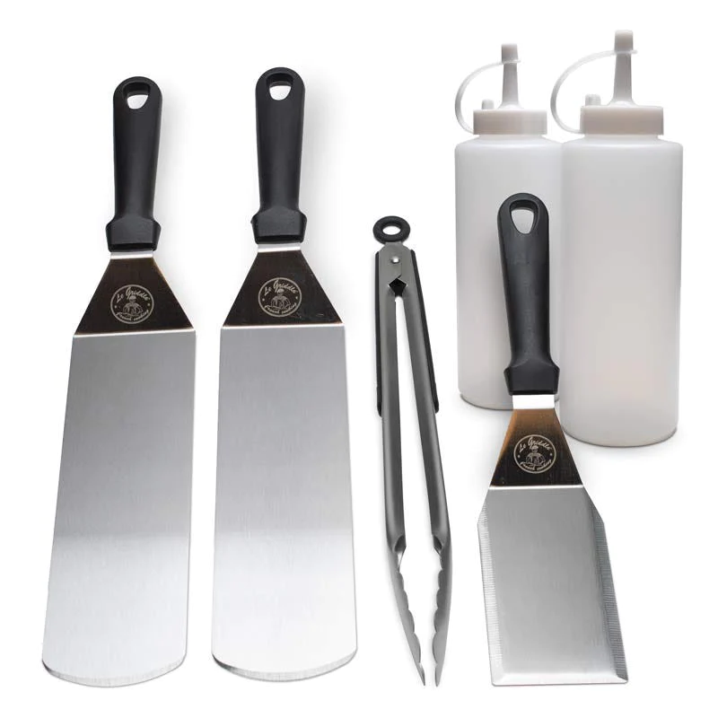
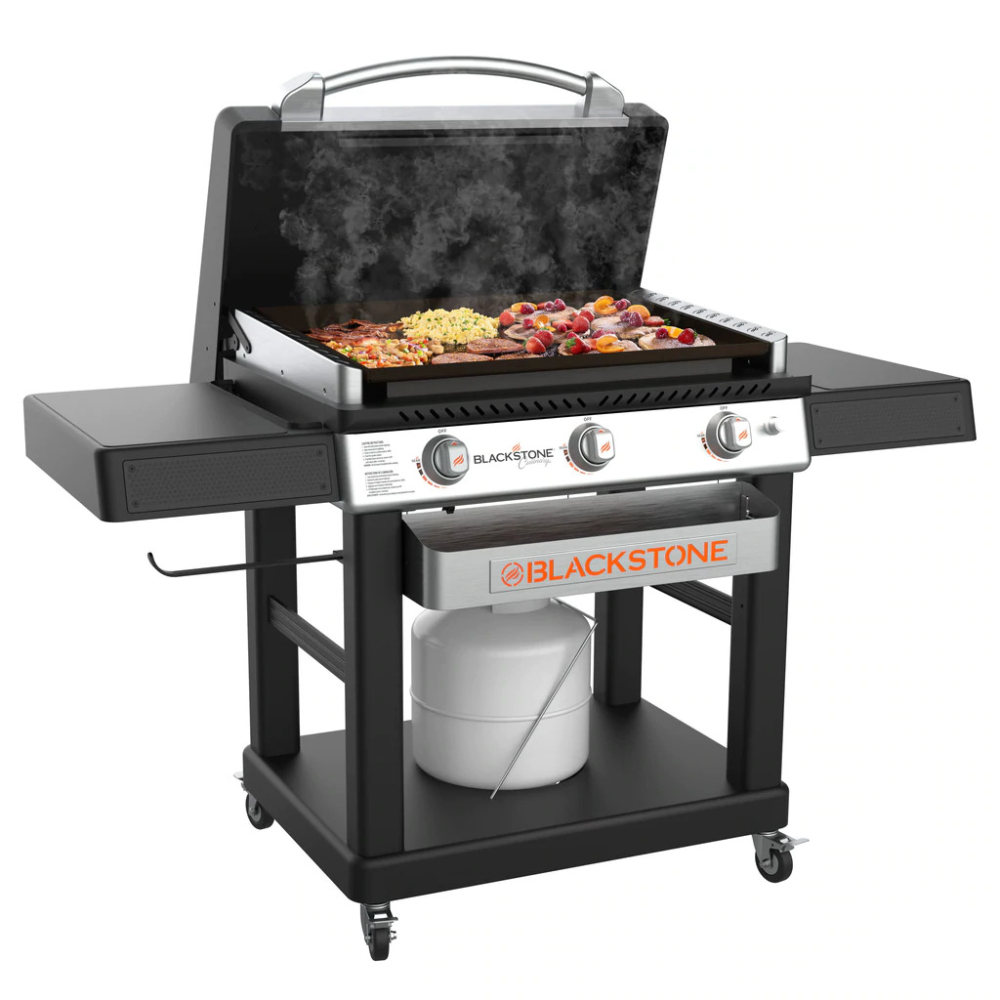
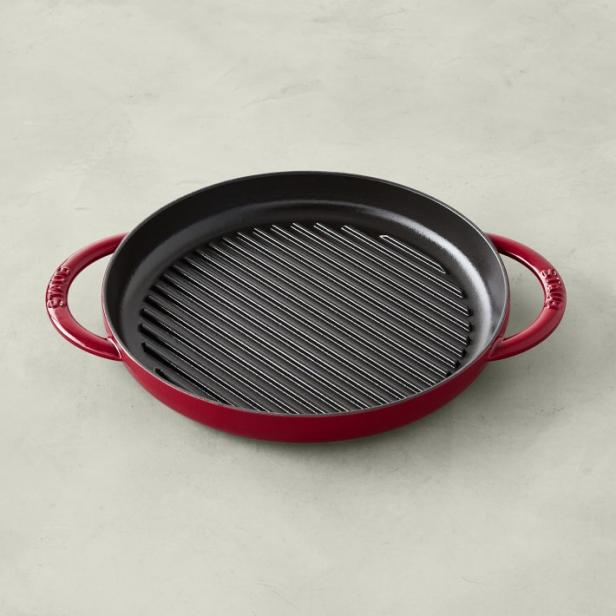

Products of the week
Starter kit
- Set of six.
- Le Griddle Accessories Starter Kit has everything you need to start cooking on the griddle.
- Includes a water bottle, an oil bottle, two cooking spatulas, a pair of tongs and a cleaning spatula.
Blackstone griddle
- The Cart has three independently controlled cooking zones and can pump out 48,000 BTUs, making it a convenient and durable option for creating any dish.
- Classic 28” Griddle with a Culinary Style Front Utility Tray, dual side shelves, and a Stainless Culinary Styled Hood.
Grill pan
- It is oven safe up to 500 degrees F and can be used on various cooktops
- Cleaning off anything that sticks is pretty easy and the pan has 1½-inch-high sides and lots of grilling surface area
- Calphalon says this pan is nonstick quality lasts 40% longer than its own Classic pans and offers a lifetime warranty.
Our Customer Promise: Unleash Culinary Confidence!
At Cast Iron Culinary, we take pride in delivering not just cookware but an unwavering commitment to your culinary satisfaction. Our customer guarantee is more than a statement; it's a pact that ensures your cooking experience is nothing short of extraordinary. From sizzling griddles to versatile grill pans, each piece is meticulously crafted for durability and performance. We stand behind the quality of our products with confidence. But here's the real guarantee if, for any reason, you're not absolutely thrilled with your purchase, we pledge to make it right, no questions asked!